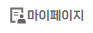

<nav class="navbar navbar-expand-lg bg-body-tertiary">
    <div class="container-fluid">
        <!-- Home 버튼에 이미지 추가 -->
        <!-- Home 버튼에 'home.png' 이미지를 추가하고, index.html로 이동하는 링크로 설정 -->
        <a class="navbar-brand" href="index.html">
            
        </a>
        <!-- MyPage 버튼 위치 -->
        <!-- MyPage 버튼은 기본적으로 숨겨져 있으며, 사용자가 로그인했을 때만 표시됩니다. -->
        <a id="myPageLink" class="navbar-brand" href="MyPage.html" style="display: none;">
            
        </a>
        <!-- 네비게이션 바를 모바일에서 토글할 수 있는 버튼 -->
        <button class="navbar-toggler" type="button" data-bs-toggle="collapse" data-bs-target="#navbarNav" aria-controls="navbarNav" aria-expanded="false" aria-label="Toggle navigation">
            <span class="navbar-toggler-icon"></span>
        </button>
        <div class="collapse navbar-collapse" id="navbarNav">
            <!-- 네비게이션 바 항목들 -->
            <ul class="navbar-nav ms-auto">
                <!-- Home 링크 -->
                <li class="nav-item">
                    <a class="nav-link active" aria-current="page" href="index.html">Home</a>
                </li>
                <!-- 게시판 링크 -->
                <li class="nav-item">
                    <a class="nav-link" href="board.html">게시판</a>
                </li>
                <!-- 회원가입 링크 -->
                <li class="nav-item">
                    <a class="nav-link" href="register.html">회원가입</a>
                </li>
                <!-- 로그인 링크 -->
                <!-- 이 링크는 사용자가 로그인하지 않았을 때만 표시됩니다. -->
                <li class="nav-item">
                    <a id="loginLink" class="nav-link" href="login.html">Login</a>
                </li>
            </ul>
        </div>
    </div>
</nav>

<script>
document.addEventListener("DOMContentLoaded", function() {
    // 세션 스토리지에서 로그인 정보를 가져옴
    const userEmail = sessionStorage.getItem("userEmail");
    
    // 로그인 상태일 경우
    if (userEmail) {
        console.log("User is logged in with email:", userEmail);  // 로그 추가
        // MyPage 버튼 표시
        const myPageButton = document.getElementById("myPageLink");
        myPageButton.style.display = "inline-block";  // MyPage 버튼을 표시하도록 스타일을 변경
        console.log("MyPage button shown next to Home button");
        
        // Login 버튼 숨기기
        const loginButton = document.getElementById("loginLink");
        if (loginButton) {
            loginButton.style.display = "none";  // 로그인 버튼을 숨김
            console.log("Login button hidden");
        }
    } else {
        console.log("No user logged in");  // 사용자가 로그인하지 않은 경우 로그 출력
    }
});
</script>
